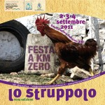

2-3-4 settembre
San Salvatore Telesino
ingresso libero
{kind=link}
Le 3 serate della IX edizione della festa dello struppolo che avranno luogo il prossimo fine settimana nel centro storico di San Salvatore Telesino, saranno un’ occasione importante per confrontarsi con un evento bio-compatibile ad impatto limitato sul nostro ambiente. I prodotti necessari alla realizzazione di questo rustico della nostra gastronomia sono quanto di più essenziale e naturale si possa immaginare: farina, uova, olio e sale; ingredienti che sono da secoli i protagonisti della nostra tavola. Il laboratorio di mastro struppolo saprà darne una pratica e scenografica dimostrazione. Tutti i prodotti utilizzati e proposti sono di provenienza locale, sono stati trasportati per brevi distanze, sono altamente genuini e garantiti, l’acqua è di rete, tutto questo unitamente all’utilizzo di materiale biodegradabile ci consentirà di evitare inutili accumuli di rifiuti che speriamo, diventino sempre più un brutto ricordo da metterci per sempre alle spalle. La nostra sensibilità unita a quella di tutti gli altri protagonisti della manifestazione e il contributo della Consulta Ambientale ci permetteranno di operare in favore dell’ambiente. Il percorso della festa interesserà Piazza Nazionale, Piazza XXIII novembre e il parco di Bambinopoli, le strade del centro storico con i palazzi dei secc. XVIII e XIX faranno da sfondo alle mostre, agli espositori e ai gruppi musicali che parteciperanno alle serate. Una festa bio-sostenibile per promuovere l’immagine di una cittadina e della sua eno-gastronomia è ciò che la Pro Loco di San Salvatore vuole riproporre con il contributo delle altre associazioni presenti sul territorio che quest’anno ci hanno offerto un fattivo contributo per la realizzazione dell’evento.
PROGRAMMA 2-3-4 SETTEMBRE 2011
ore 21.00
Stand Gastronomici e Glocal market/Percorso del gusto da Piazza Nazionale
Mastro Struppolo: laboratorio di preparazione dello struppolo Piazza Nazionale
Mostre – Comics for Africa di Roberto Riccio/Biblioteca Comunale
Bici e dintorni mostra fotografica/Vico Notaro
Carnevale sansalvatorese mostra storico-fotografica di Costantino Ferri
Visite Guidate Telesia Antiquarium /Abbazia benedettina fino alle ore 22.00
Mercatino del baratto e dell’usato dei bambini, Animazione bambini al Parco Bambinopoli
Musica dal vivo:
2 settembre ore 21.30
Piazza Nazionale: La Grange/country jazz
Largo Chiesa: A Django/jazz-manouche
3 settembre ore 21.30
Piazza Nazionale: Stragatti/vintage music in retro style
Largo Chiesa: Bufis & Bufis/jazz
4 settembre ore 21.30
Piazza Nazionale: Amarcord/retrò italiano
Largo Chiesa: Fourtet/jazz fusion
> tutti prodotti utilizzati e proposti sono di provenienza locale, non sono stati trasportati per lunghe distanze, altamente genuini e garantiti
> le stoviglie sono di bioplastica completamente biodegradabili
> l’acqua è di rete